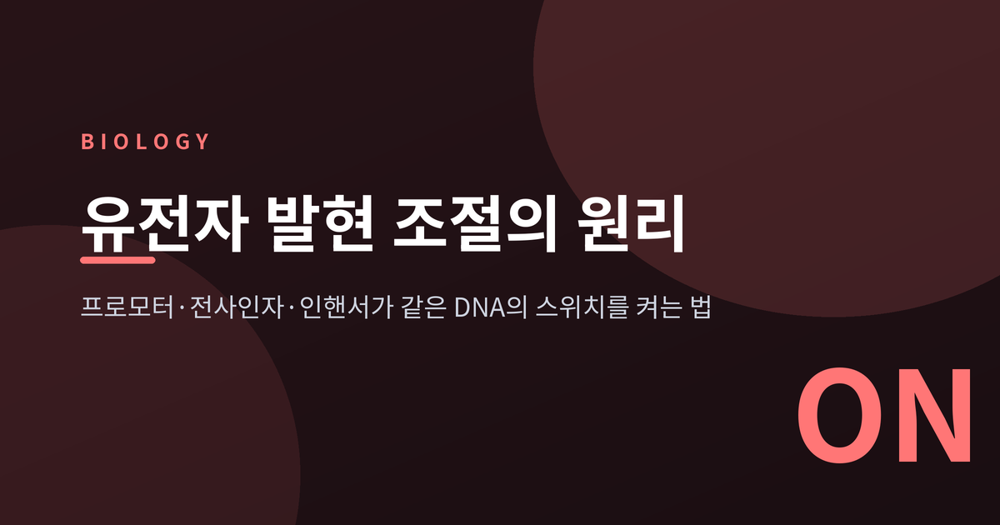
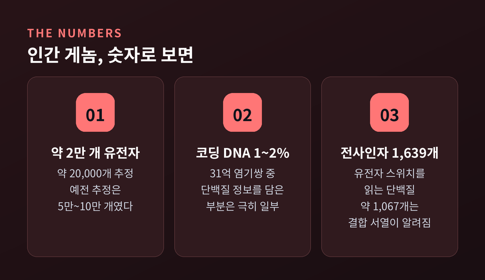
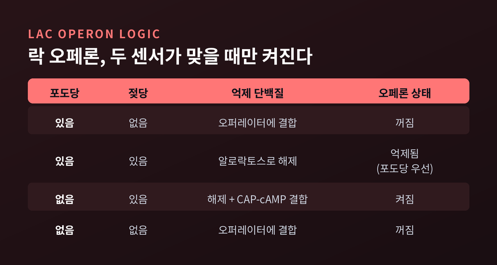
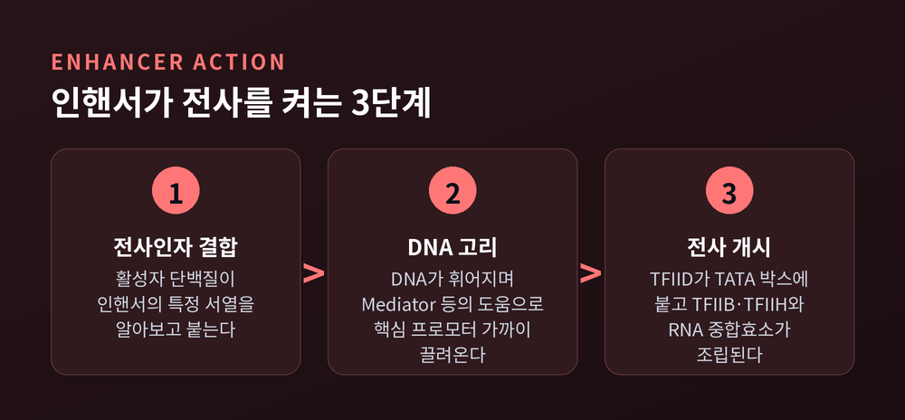
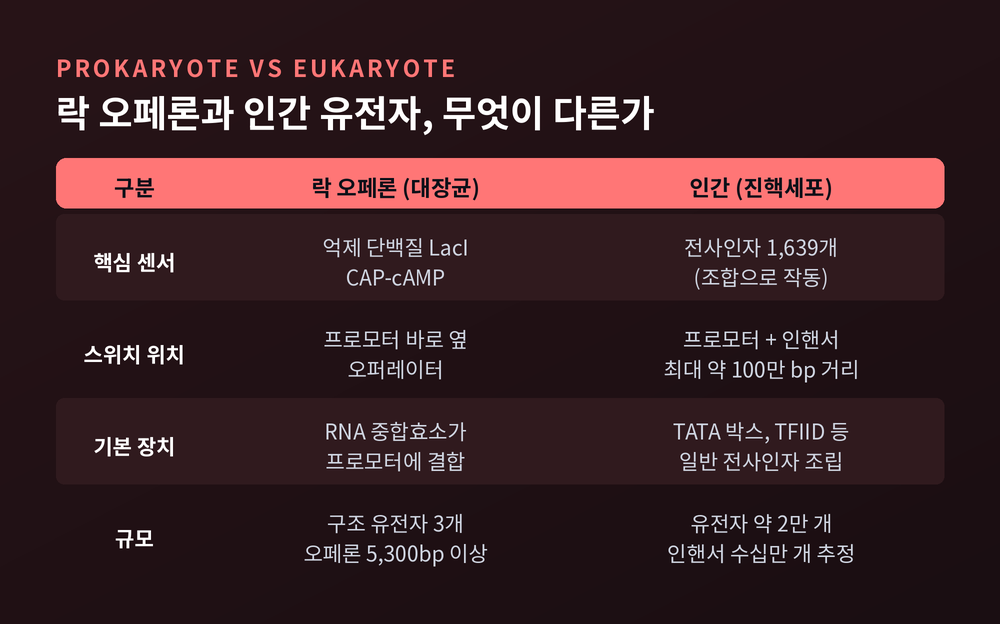
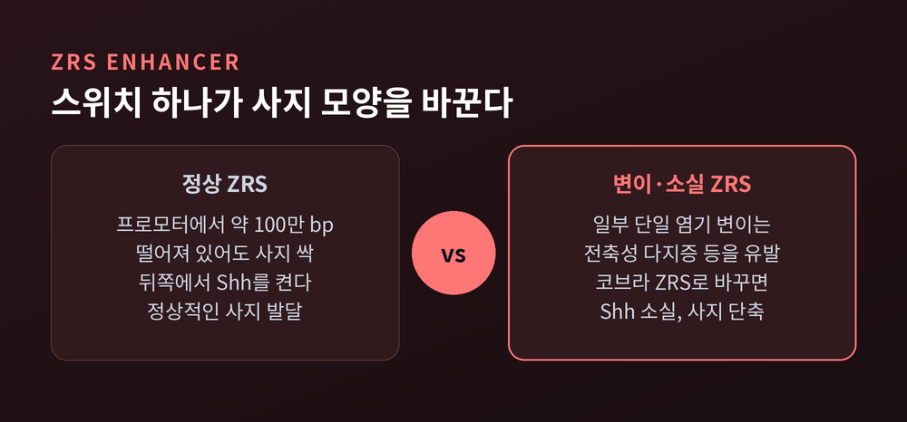

3줄 요약
오늘은 유전자 발현 조절의 원리에 대해 이야기해 보려 합니다.
대장균의 락 오페론에서 출발해 인간 세포의 프로모터, 전사인자, 인핸서까지 차례로 살펴보겠습니다.
인간 게놈에는 약 31억 염기쌍이 들어 있습니다. 단백질을 만드는 유전자는 약 2만 개로 추정됩니다.
예전엔 5만~10만 개로 짐작했습니다. 인간 게놈 프로젝트가 끝난 뒤에야 지금의 숫자에 가까워졌습니다.
흥미로운 점은 따로 있습니다. 단백질 정보를 담은 코딩 DNA는 게놈의 약 1~2%에 불과합니다.
나머지 대부분은 언제, 어디서, 얼마나 켤지를 정하는 영역과 아직 역할이 덜 밝혀진 영역입니다. 조절 서열은 게놈의 8~20%로 추정되지만, 연구자들 사이에 합의된 수치는 아닙니다.
피부 세포와 신경 세포는 같은 설계도를 들고 있습니다. 다른 점은 어느 쪽 페이지를 펼쳤느냐입니다.
유전자 발현 조절은 바로 그 페이지를 고르는 과정입니다.

1947년 자크 모노는 대장균이 젖당(락토스)을 소화하는 모습을 관찰했습니다. 1950년 프랑수아 자코브가 합류했고, 두 사람은 1959년 억제 유전자의 산물이 효소 발현을 조절한다는 점을 보였습니다. 1961년에는 「Genetic regulatory mechanisms in the synthesis of proteins」라는 논문으로 이 구조를 정리했습니다. 이 업적으로 1965년 르보프와 함께 노벨 생리의학상을 받았습니다.
락 오페론에는 구조 유전자가 세 개 있습니다. lacZ(β-갈락토시다아제), lacY(젖당 퍼미에이스), lacA(트랜스아세틸레이스)입니다. 이 셋이 한 묶음으로 같은 스위치에 연결되어 있습니다.
작동 방식은 단순합니다.
젖당이 없으면 억제 단백질(LacI)이 오퍼레이터라는 자리에 붙어 중합효소의 길을 막습니다. LacI는 같은 소단위 네 개로 이루어진 사량체입니다.
젖당이 들어오면 사정이 달라집니다. 소량의 β-갈락토시다아제가 젖당을 알로락토스로 바꾸고, 알로락토스가 억제 단백질에 붙어 DNA에서 떼어냅니다. 1972년에 알로락토스가 천연 유도자로 확인되었습니다.
여기에 한 겹이 더 있습니다. 포도당이 부족해지면 cAMP가 늘고, CAP-cAMP 복합체가 프로모터 상류에 붙어 RNA 중합효소의 결합을 돕습니다. 반대로 포도당이 있으면 젖당이 있어도 오페론은 억제됩니다. 대장균은 가장 손쉬운 먹이부터 쓰는 셈입니다.

이 구조의 핵심은 두 개의 센서입니다. 억제 단백질은 젖당이 있는지를, CAP는 포도당이 없는지를 읽습니다. 두 조건이 모두 맞을 때만 스위치가 켜집니다.
인간 같은 진핵세포에서는 스위치가 훨씬 정교해집니다.
먼저 프로모터가 있습니다. 전사 시작점에서 약 30bp 상류에 핵심 프로모터가 놓이고, 그 안의 TATA 박스에 TBP 단백질이 붙습니다. TFIID가 먼저 자리를 잡으면 TFIIB와 TFIIA가 이어지고, RNA 중합효소와 TFIIH 같은 일반 전사인자가 모입니다. 이것이 모든 Pol II 유전자가 공유하는 기본 전사 장치입니다.
다만 이 기본 장치만으로는 켜지는 정도를 정하지 못합니다. 선택은 전사인자의 몫입니다.
전사인자는 DNA의 특정 서열을 알아보는 단백질입니다. 활성자는 RNA 중합효소를 불러 모으고, 억제자는 그 모집을 막습니다. 인간에게는 1,639개의 전사인자가 목록화되어 있고, 그중 약 1,067개는 결합 서열이 알려져 있습니다. 유전자의 약 10%가 전사인자를 암호화하며, 약 절반이 징크핑거 단백질입니다.
락 오페론에는 억제 단백질 하나와 CAP 하나면 충분했습니다. 인간 세포는 여러 전사인자의 조합으로 한 유전자의 운명을 정합니다. 한 인핸서에도 소수의 전사인자가 조합되어 붙는 것으로 알려져 있습니다.
1981년 SV40 바이러스에서 최초로 인핸서가 기술되었고, 1983년에는 면역글로불린 중쇄 유전자에서도 발견되었습니다.
인핸서의 특징은 거리와 방향에 무심하다는 점입니다. 유전자에서 최대 약 1Mbp, 즉 100만 염기쌍까지 떨어져도 작동합니다. 상류에 있어도 하류에 있어도 되고, 방향을 뒤집어도 기능합니다. 인간 게놈에는 수십만 개가 있는 것으로 추정됩니다. 한 연구에서는 약 110,000개의 서열이 확인되었습니다.

멀리 있는 요소가 어떻게 영향을 줄까요. 교과서의 설명은 DNA 고리입니다. DNA가 휘어지면서 인핸서와 거기 붙은 전사인자가 핵심 프로모터 가까이로 끌려옵니다.
2025년 Kevin Struhl은 이 그림을 조금 고쳤습니다. 먼 인핸서가 프로모터에 곧장 닿는 것이 아니라 가까운 인핸서와 고리를 만들고, 그 가까운 인핸서가 중합효소 장치와 접촉한다는 제안입니다. 멀리서 작용하는 듯 보여도, 중합효소 장치와는 단거리 상호작용으로만 자극한다는 것입니다. 이 문제는 아직 논쟁 중입니다. Mediator 복합체와 전사인자가 이 접촉을 돕는다는 점에는 의견이 모이는 편입니다.
락 오페론과 비교하면 차이가 선명합니다.

인핸서가 왜 중요한지는 사례에서 드러납니다.
Sonic hedgehog(Shh) 유전자는 사지 발달에 쓰입니다. 이 유전자의 사지 인핸서 ZRS는 프로모터에서 거의 100만 염기쌍 떨어져 있습니다. 사지 싹의 뒤쪽 조직에서 활성화되며, 생쥐의 정상적인 사지 발달에 꼭 필요합니다.
ZRS의 단일 염기 변이는 사람을 포함한 여러 척추동물에서 사지 기형을 일으킵니다. 대표적으로 손가락이 더 생기는 전축성 다지증이 있습니다. 유전자 자체는 멀쩡해도 스위치가 틀어지면 결과가 달라진다는 뜻입니다.
진화의 단서도 있습니다. 사지가 사라진 고등 뱀에서는 ZRS의 치환 속도가 급격히 늘었습니다. 흔적 사지를 가진 원시 뱀은 서열이 더 잘 보존되어 있었습니다. 생쥐의 ZRS를 코브라의 것으로 바꾸자 Shh 발현이 완전히 사라졌고, 앞다리와 뒷다리가 모두 짧아졌습니다.

단백질을 만드는 부분이 아니라 조절 부분의 글자 하나가 몸의 모양을 바꾼 것입니다. 다만 이 사례는 일부 변이와 종에서 확인된 결과이므로, 모든 사지 기형의 원인으로 일반화하지는 않으셔야 합니다. 이 글은 교양 과학 설명이며 의학적 조언이 아닙니다.
정리하면 이렇습니다.
유전자는 악보이고, 프로모터와 전사인자와 인핸서는 연주자의 손입니다. 같은 악보도 어느 음을 얼마나 세게 누르느냐에 따라 다른 곡이 됩니다.
"생명의 차이는 유전자의 목록이 아니라 스위치의 배선에서 나온다."
1960년대 대장균의 한 줄짜리 스위치에서 시작된 이야기는, 이제 100만 염기쌍을 넘나드는 조절 그물로 이어졌습니다. 같은 DNA를 두고도 세포가 다른 삶을 사는 까닭을 이해하셨다면, 이 글은 제 몫을 한 셈입니다.